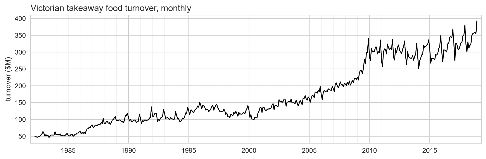
Benchmarks, Residuals & Prediction Intervals
Day 2 · Lecture 1 · fpppy Ch 5.1–5.7
2026-09-03
The Day 2 plan
Day 1 found that seasonality separates retail series, not trend. Today we build the floor a model must beat, and the way to prove a forecast is real.
- Five models, each one answering what the last one’s errors gave away
- Residual diagnostics: the instrument that names the missing term
- Prediction intervals: the Gaussian formula, why it fails, and two repairs
A forecast without a range is half an answer
Segments C, D and E are all about that range.
A. Four simple models set the floor
Ch 5.1-5.4 · Fit one, diagnose it, let the fault name the next
Every chart today is drawn from one retail series
- Monthly retail sales in Victoria, Australia, in millions of dollars
- 441 months, April 1982 to December 2018, no gaps and no missing values
The last 24 months are held out, and never shuffled
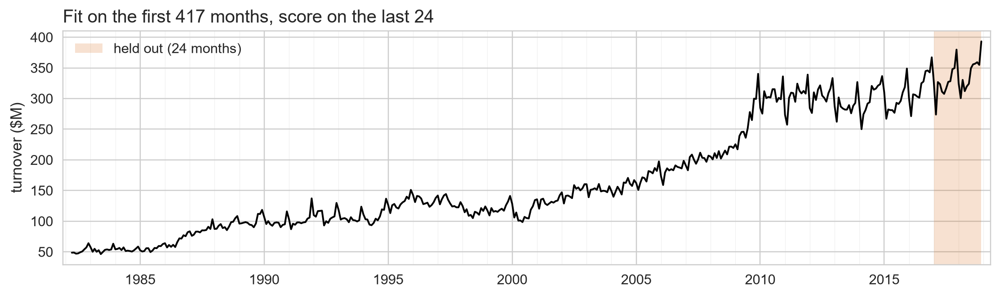
- Split in time, never at random: a shuffle trains on 2018 to predict 2017
- \(h = 24\) came from the decision, not from the data: a two-year plan needs two years
train, test = D.train_test(spine, h=24)
Every formula here is built from four symbols
| Symbol | Meaning |
|---|---|
| \(T\) | the forecast origin, the last observed time |
| \(h\) | the forecast horizon, steps ahead |
| \(m\) | the seasonal period, 12 for monthly data |
| \(\hat{y}_{a\mid b}\) | the forecast of time \(a\), made from data up to time \(b\) |
The origin stays at \(T\) all segment, so we drop the bar and write \(\hat{y}_{T+h}\). It comes back whenever the origin moves.
Three baselines start by ignoring the calendar
The mean. Average everything, use it for every horizon:
\[\hat{y}_{T+h} = \bar{y} = \frac{1}{T}\sum_{t=1}^{T} y_t\]
The naive. Take the last observation, use it for every horizon:
\[\hat{y}_{T+h} = y_T\]
The drift. The naive, tilted by the line through the first and last point:
\[\hat{y}_{T+h} = y_T + \dfrac{h}{T-1}(y_T - y_1)\]
Two of the three at least start in the right place
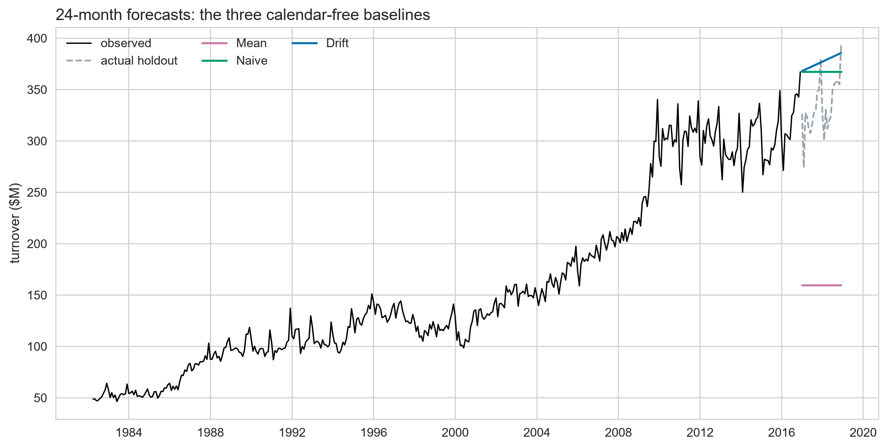
Residuals flatter, forecast errors do not
Residual (\(e_t\)): one-step error on training data
\[e_t = y_t - \hat{y}_{t|t-1}\]
Residuals (\(e_t\))
In-sample training errors
Flattering to the model
Forecast Errors (\(e_{T+h}\))
Out-of-sample holdout errors
Honest evidence
Naive: \(e_t = y_t - y_{t-1}\), the raw one-step change.
The naive’s errors still know what month it is
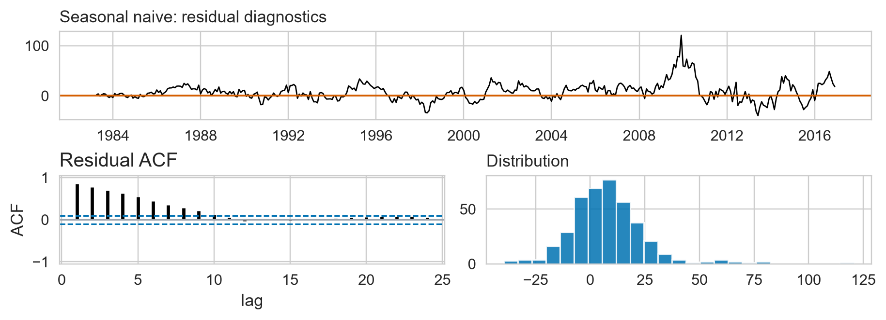
- Lags 12 and 24 (orange) stand at 0.68 and 0.58, against a bound of 0.10
- Day 1 named that shape: a spike every \(m\) lags is seasonality, still in there
Drift fixes the mean and nothing else
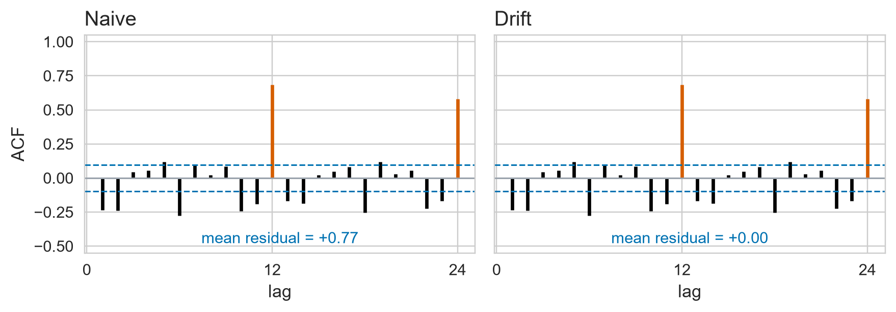
- Drift’s residual is the naive’s, less the constant slope 0.77: same spread, same every lag
- Mean residual moves from +0.77 to +0.00, and lags 12 and 24 do not move at all
- A trend term fixed the bias. It could not fix a fault that was never about trend
The seasonal naive repeats last year’s same month
\[\hat{y}_{T+h} = y_{T+h-m(k+1)}, \qquad k = \left\lfloor \frac{h-1}{m} \right\rfloor\]
Monthly data, so \(m = 12\): one seasonal cycle is one year.
- \(k+1\) is how many seasonal cycles back the forecast reaches
- \(h = 1 \dots 12\): \(k = 0\), so it copies last year’s same month
- \(h = 13 \dots 24\): \(k = 1\), so it steps back a second year
The staircase in segment C is built on this \(k\): flat within each block of \(m = 12\) months, one step up per seasonal cycle.
All four simple models, and the floor they set

Objective evidence: what proves a complex model adds value.
Fit four models at once in code
from statsforecast import StatsForecast
from statsforecast.models import (HistoricAverage, Naive,
SeasonalNaive, RandomWalkWithDrift)
sf = StatsForecast(models=[HistoricAverage(), Naive(),
SeasonalNaive(season_length=12),
RandomWalkWithDrift()], freq=D.FREQ)
fc = sf.forecast(df=train, h=H, level=[80, 95], fitted=True)
fv = sf.forecast_fitted_values() # the residuals we just readThe winner’s residuals sit high and fan out
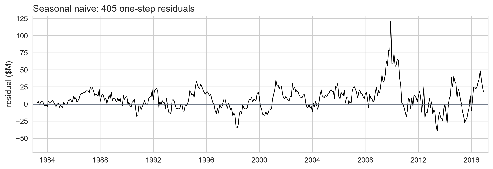
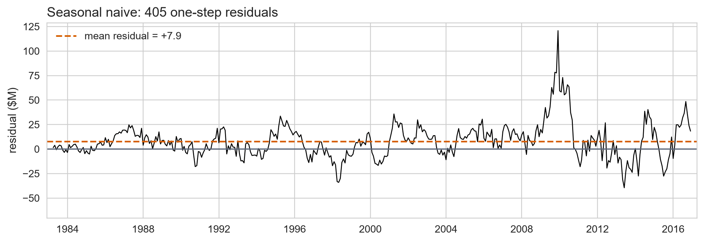

- The dashed line is the mean, +7.9: 68% of the errors sit above zero
- Each box is a decade’s typical miss: 8.5, then 26.2, 3x as tall
The season is gone, but the decay is not
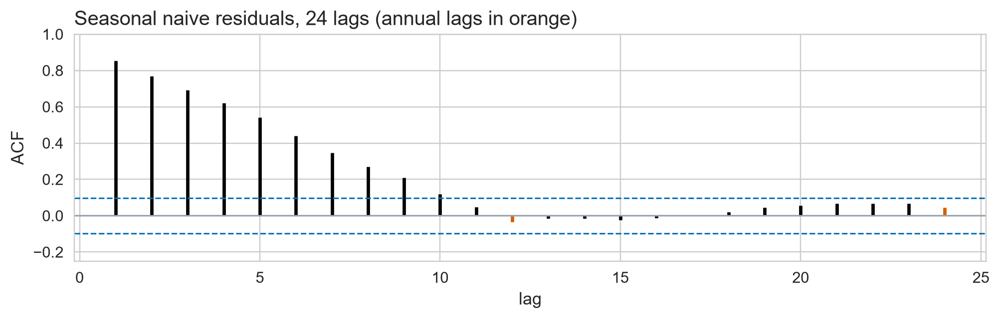
- Lags 12 and 24 (orange) now fall inside the bounds at -0.03 and +0.04
- The orange spikes the naive had are gone: the calendar term worked
- What is left decays smoothly from 0.85. Day 1 named that shape too: trend
B. One model with both terms
Ch 5.7, 5.4 · The decomposition route, and the verdict on all five
Decomposition is also a forecasting method
1 · STL splits the series, and the three parts group into two:
\[y_t = \underbrace{T_t + R_t}_{A_t,\;\text{seasonally adjusted}} + \underbrace{S_t}_{\text{season}}\]
2 · Forecast each part with the simple model that suits it:
\[\underbrace{\hat{A}_{T+h} = A_T + \frac{h}{T-1}(A_T - A_1)}_{\text{drift}} \qquad \underbrace{\hat{S}_{T+h} = S_{T+h-m(k+1)}}_{\text{seasonal naive}}\]
3 · Add them back:
\[\hat{y}_{T+h} = \hat{A}_{T+h} + \hat{S}_{T+h}\]
MSTL(season_length=12, trend_forecaster=RandomWalkWithDrift()) runs all three steps in one call.
STL’s two parts forecast separately, then add
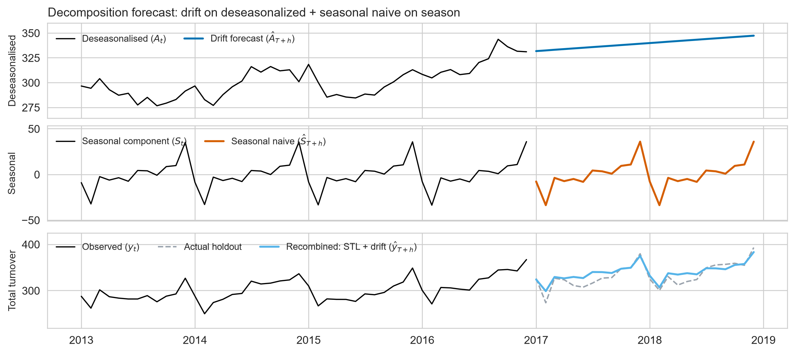
On this window, the decomposition route clears the floor

The seasonal naive repeats last year’s level; STL lets drift carry the growth.
Ljung-Box turns 24 lag checks into one test
\(H_0\): the first \(\ell = 24\) residual autocorrelations are all zero.
\[Q = T(T+2)\sum_{k=1}^{\ell}\frac{r_k^2}{T-k} \qquad Q \sim \chi^2_{\ell-K} \; \text{ under } H_0\]
\(r_k\): the lag-\(k\) autocorrelation · \(K\): parameters estimated, 0 here · \(p\): how often a \(Q\) this large would happen if \(H_0\) were true
- \(p < 0.05\): autocorrelation is real \(\rightarrow\) model is not finished
- \(p \ge 0.05\): residuals are indistinguishable from white noise
Every baseline fails, and they fail differently
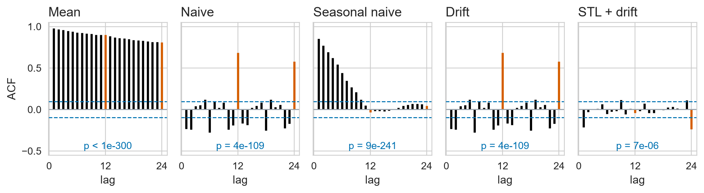
- Every \(p\) is far below 0.05: not one of the five is finished
- Read the shapes, not the \(p\): annual spikes mean a missing season, decay means a missing trend
- STL + drift halves the spread, 12.7 to 6.5, and still fails: see lag 24
- The residual checklist is four: uncorrelated · zero mean · constant variance · normal
C. Prediction intervals
Ch 5.5 · Quantifying uncertainty
The future is a range, not a point
At origin \(T\) the future value is still random; capital \(Y\) marks a value not yet observed:
\[Y_{T+h}\mid \mathcal{I}_T \qquad \mathcal{I}_T = \text{everything known at time } T\]
- Point forecast: one centre, usually a mean or median
- 80% interval: the \(0.1\) and \(0.9\) quantiles of \(Y_{T+h}\mid \mathcal{I}_T\)
- 95% interval: the \(0.025\) and \(0.975\) quantiles
The distribution belongs to the unknown future value, not to the forecast. What a quantile is
The seasonal naive’s prediction interval
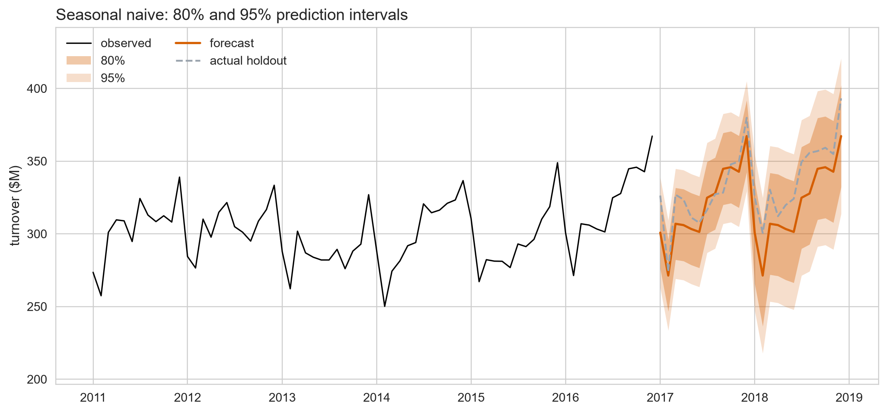
Every model says: something known, plus an error
Segment A defined a residual as a subtraction:
\[e_t = y_t - \hat{y}_{t|t-1}\]
Move the forecast across, and the same line becomes a recipe for making data:
\[y_t = \hat{y}_{t|t-1} + e_t\]
Every interval method in this deck is one answer to the same question: where does \(e_t\) come from?
The Gaussian interval is a spread times a multiplier
The Gaussian answer to that question, in one line:
\[e_t \sim \mathcal{N}(0, \sigma^2) \;\text{ i.i.d.}\]
Grant it, and the interval closes into a formula:
\[\hat{y}_{T+1|T} \pm c\,\hat{\sigma} \qquad\text{with}\qquad \hat{\sigma} = \sqrt{\frac{1}{T - K - M}\sum_{t=1}^{T} e_t^2}\]
- \(c\) comes off that normal: 1.28 for an 80% band, 1.96 for 95%
- \(K\) and \(M\) shrink the denominator: parameters estimated, and residuals a model cannot form
The formula was one step. What about \(h\)?
\(\hat{\sigma}\) measures one-step errors. Put the naive’s forecast into the recipe:
\[y_t = y_{t-1} + e_t, \qquad e_t \sim \mathcal{N}(0, \sigma^2) \;\text{ i.i.d.}\]
Roll it forward. Each step carries one more error:
\[\begin{aligned} y_{T+1} &= y_T + e_{T+1} \\ y_{T+2} &= y_T + e_{T+1} + e_{T+2} \\ y_{T+h} &= y_T + \textstyle\sum_{i=1}^{h} e_{T+i} \end{aligned}\]
The forecast is \(y_T\), so the error is that whole sum, and independent errors add variances:
\[\operatorname{Var}\Big(\sum_{i=1}^{h} e_{T+i}\Big) = h\,\sigma^2 \qquad\Longrightarrow\qquad \hat{\sigma}_h = \hat{\sigma}\sqrt{h}\]
Each model accumulates errors at its own rate
Run that same count on each model’s own recursion:
| Model | \(h\)-step forecast standard deviation |
|---|---|
| Naive | \(\hat{\sigma}_h = \hat{\sigma}\sqrt{h}\) |
| Mean | \(\hat{\sigma}_h = \hat{\sigma}\sqrt{1 + 1/T}\) |
| Seasonal naive | \(\hat{\sigma}_h = \hat{\sigma}\sqrt{k+1}\), \(k = \lfloor (h-1)/m \rfloor\) |
| Drift | \(\hat{\sigma}_h = \hat{\sigma}\sqrt{h\left(1 + \dfrac{h}{T-1}\right)}\) |
- Seasonal naive: \(y_t = y_{t-m} + e_t\), so reaching \(T+h\) crosses \(k+1\) seasonal cycles, not \(h\) steps
- Mean and drift carry an extra term because their centre is estimated, not copied
The Gaussian interval rests on three assumptions
One line did all of it: \(e_t \sim \mathcal{N}(0, \sigma^2)\) i.i.d.
- Residuals are uncorrelated: otherwise \(\hat{\sigma}\) understates the spread
- Residuals have constant variance: one \(\hat{\sigma}\) for the whole series
- Residuals are normally distributed: otherwise \(c = 1.28\) is the wrong multiplier
Segment A failed the first two by looking. The third has never been checked.
Not normal: the 80% band is too wide
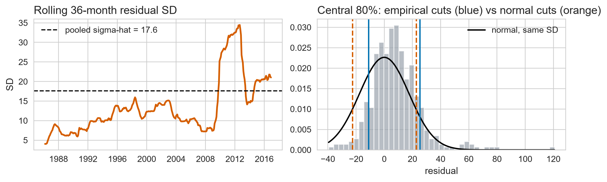
- Bars above the curve in the middle, still there out in the tails
- The errors’ own middle 80% (blue) spans 36; \(c = 1.28\) claims 45
D. Bootstrapped intervals
Ch 5.5 · Dropping the normality assumption
Draw the errors this model already made, and simulate forward
The pool we draw from is the errors themselves
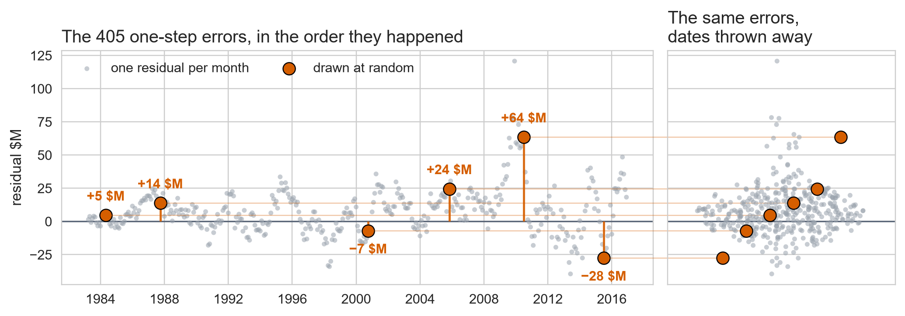
- Write \(e^*\) for one picked out of these.
- With replacement, so one of the 405 can be drawn twice
Forecast one step, add an error, feed it back
A starred \(y^*\) is invented; a plain \(y\) was observed.
Each trip round the loop is \(y_t = \hat{y}_{t|t-1} + e_t\) again, one step further on:
\[\begin{aligned} y^*_{T+1} &= \hat{y}_{T+1 \,|\, T} + e^*_1 \\ y^*_{T+2} &= \hat{y}_{T+2 \,|\, T+1} + e^*_2 \\ &\;\;\vdots \\ y^*_{T+h} &= \hat{y}_{T+h \,|\, T+h-1} + e^*_h \end{aligned}\]
- Every line after the first conditions on a \(y^*\) we invented
- Run the loop out to \(h\) and that is one path
The model enters only through \(\hat{y}\): the loop bootstraps all five.
Repeat 5000 times, then cut each column

The band is not the method. The paths are. Pick one month, collect the 5,000 values the paths have there, sort them, and mark the 0.1 and the 0.9 quantile. Repeat at every month and the marks join up into the band. What a quantile is
Dropping normality buys a fifth off the 80% band
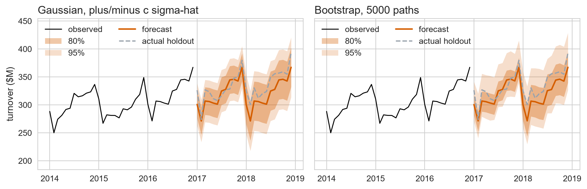
- Mean 80% width: 59.7 Gaussian vs 46.4 bootstrap, 22% narrower
- Mean 95% width: 91.3 vs 90.1, the gap has closed
The bootstrap trades normality for i.i.d.
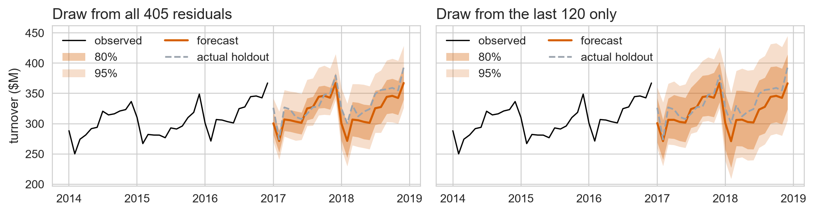
- Normality is gone. Identically distributed is what bought it
- One pool, two eras: the residual SD went 8.5 to 26.2
- Draw from recent errors only and the 80% band widens, 46.4 to 81.2
Wider than the Gaussian’s 59.7 it just beat: the fifth was borrowed from the 1980s.
E. Conformal prediction
Ch 5.5 · Assuming no distribution at all
Collect the errors you actually made at each horizon, then take their quantile
The bootstrap’s one pool is the problem
The bootstrap draws from one fixed pool of one-step residuals, shared by every horizon.
- The errors change over time, so the pool mixes eras: 8.5 then, 26.2 now
- The win it bought last segment was borrowed from the 1980s
Conformal’s answer: don’t assume one pool. Build a calibration set of \(h\)-step errors, one set per horizon, and assume only exchangeability.
One way to build the set: roll the origin and record the error at each horizon. The next slide is that, on a toy.
A 3-step error needs an origin and a horizon
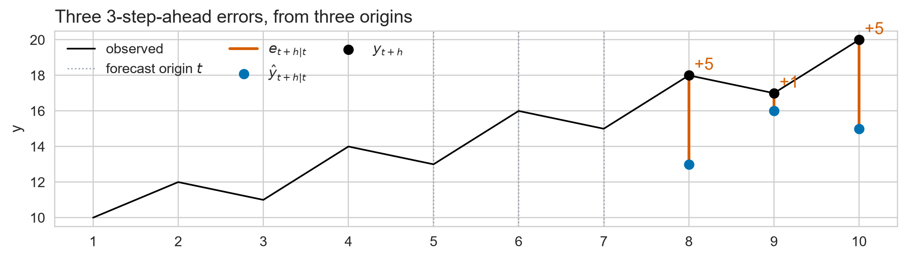
- Stand at \(t = 5\): pretend \(y_6 \dots y_{10}\) are gone, forecast three steps
- Subtract what happened: \(e_{8|5} = y_8 - \hat{y}_{8|5}\)
- A residual had one origin, yesterday. This error needs two indices
- Slide the origin to \(t = 6, 7, \dots\) and collect: the calibration set
Take a quantile of the errors you collected
\[\hat{y}_{T+h|T} \pm Q_{1-\alpha}\big(|e_{t+h|t}|\big)\]
- \(Q_{1-\alpha}\) is the \((1-\alpha)\) quantile of the errors just collected, so 80% takes \(\alpha = 0.2\)
- One quantile per \(h\), so band growth is measured, not assumed: segment C’s width formulas are not needed
- No \(\hat{\sigma}\) and no normal table, so this works on a model with no interval formula at all
The price is exchangeability: shuffle the calibration errors and nothing changes. Weaker than the bootstrap’s i.i.d., but a variance that keeps climbing still breaks it.
Collect them into a grid, then cut each column
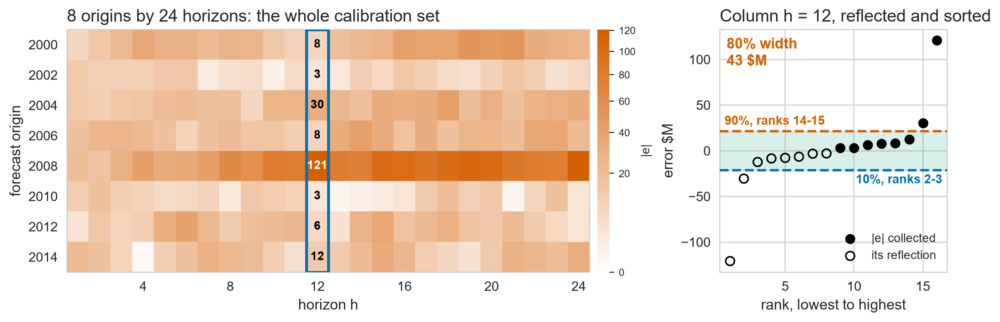
Segment D cut columns of futures it invented. This cuts columns of errors the model actually made. What a quantile is
Conformal found the staircase without the formula
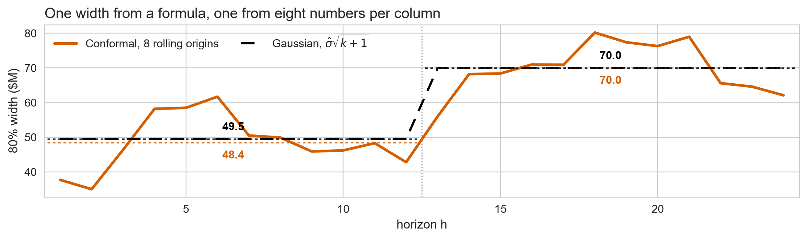
- Year 1: 48.4 wide, against the formula’s 49.5
- Year 2: 70.0 against 70.0, the same number
- Nobody told it \(m = 12\). It found the step by counting
- Horizon to horizon it wanders, because each column holds 16 numbers
More origins buy a steadier band from a staler regime
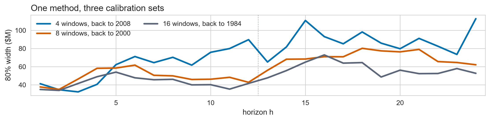
- Mean 80% width 74.3 at 4 windows, 59.2 at 8, 50.0 at 16
- 16 windows reaches back to 1984: residual SD 8.5 then, 26.2 now
Segment D’s pool argument in different clothes: more calibration data is a steadier quantile drawn from a staler regime.
Any model at all can be given a conformal interval
from statsforecast.utils import ConformalIntervals
# the grid from two slides back: n_windows is its rows, h its columns
ci = ConformalIntervals(n_windows=8, h=24)
sf_conf = StatsForecast(
models=[SeasonalNaive(season_length=12, prediction_intervals=ci)],
freq="MS",
)
fc_conf = sf_conf.forecast(df=train, h=24, level=[80, 95])- Nothing here names a distribution, so it works on a model with no interval formula
F. Choosing an interval method
Ch 5.5 · The three methods, compared
Same point forecast, three bands, one assumption each
Three methods, three bands, one centre line
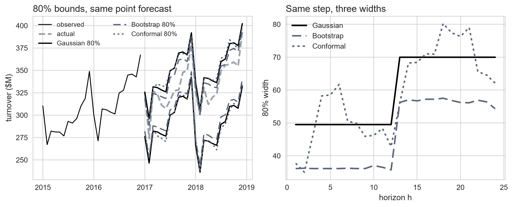
- Mean 80% width: Gaussian 59.7, bootstrap 46.4, conformal 59.2
Every interval method spends an assumption
| Method | Assumes | Gives |
|---|---|---|
| Gaussian | uncorrelated · constant variance · normal | closed form |
| Bootstrap | uncorrelated · one fixed error pool | any error shape |
| Conformal | exchangeable \(h\)-step errors | no shape, but a symmetric band |
Important
Pick by which assumption you can defend, not by the widths on the last slide.
\(\rightarrow\) Lab C · The toolbox
Open labs/02_day2_toolbox_and_evaluation.ipynb
| 2.1 | The benchmark floor | 15 min |
| 2.2 | Are the residuals white noise? | 10 min |
| 2.3 | Intervals, and how much to believe them | 21 min |
46 minutes. The notebook carries the instructions; work down it in order.
2.3 is the long one and it has three parts. If time runs short, part c is the one to leave for later.
The floor is set, and it is not finished
- Start with baselines, then let each residual check name the next model
- Check residuals are uncorrelated and zero-mean; report intervals, not numbers
- Know which assumption each interval method spends: normality, i.i.d., or exchangeability
Next: Forecast evaluation metrics and rolling-origin cross-validation.
Reminder: a quantile is a counting rule
Sort the values. A quantile is then just a position in that list: \(0.5n\) is the median, \(0.9n\) is the \(0.9\) quantile, \(0.1n\) is the \(0.1\) quantile.
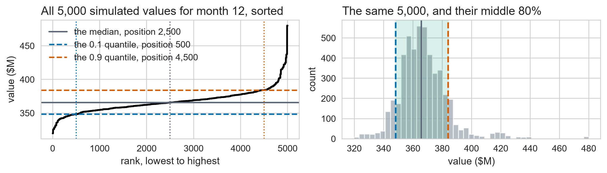
One sort, three positions. The 80% interval is the span between the \(0.1n\) and \(0.9n\) cuts, taken again at every month. Back
Reminder: a standard deviation is a width
The standard deviation is one number: how far a typical value sits from the middle.
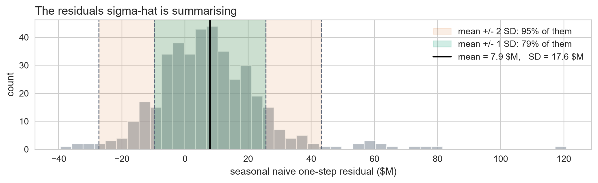
The Gaussian band is this width times \(c\): 1.28 for an 80% interval. Back